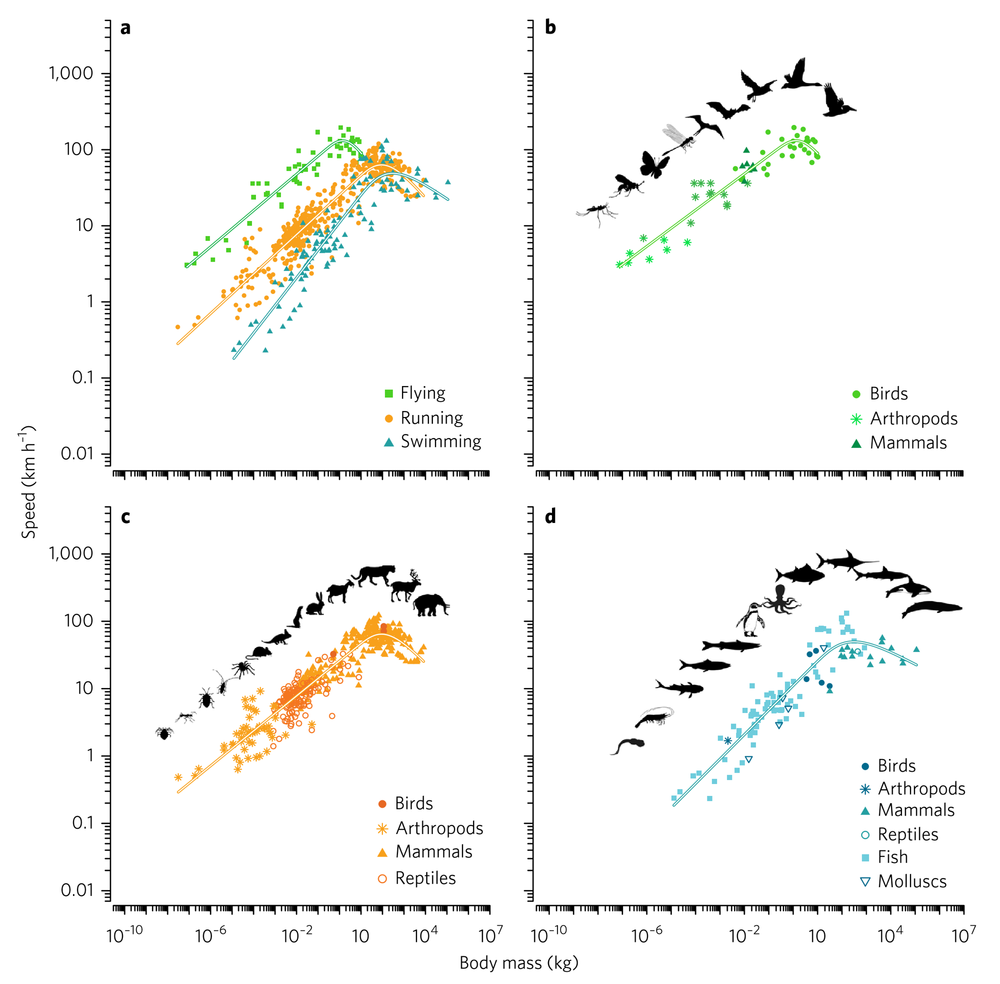
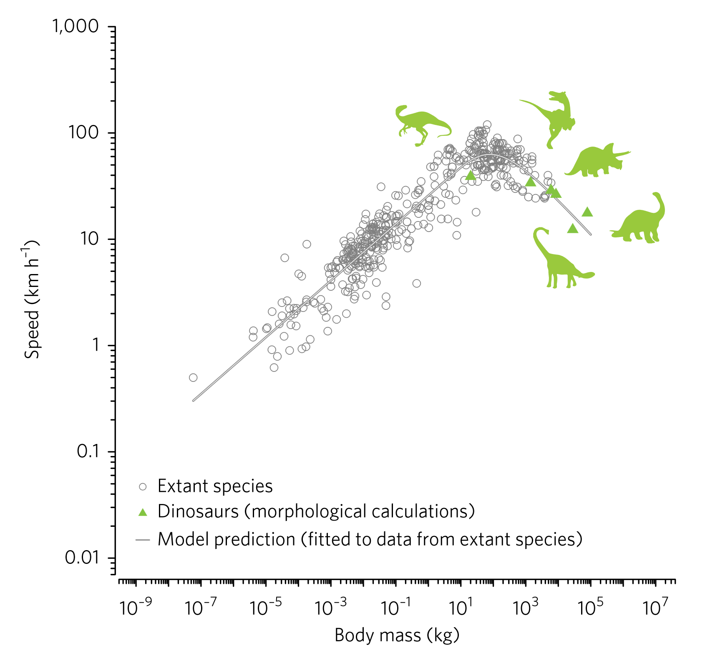

Quando os medianos ganham
Em 2017, quatro pesquisadores publicaram um modelo que prevê a velocidade máxima de um animal a partir de duas informações: quanto ele pesa e se ele corre, voa ou nada (Hirt, Jetz, Rall e Brose, A general scaling law reveals why the largest animals are not the fastest, Nature Ecology & Evolution, 2017). O modelo foi ajustado a 622 medições de 474 espécies. A menor pesa 30 microgramas. A maior passa de 100 toneladas.
Com essas duas informações, o modelo explica quase 90% da variação de velocidade entre as espécies (\(R^2\) de 0,893).
O resultado que dá título ao artigo é o formato da curva. A velocidade sobe com o tamanho, chega a um pico e depois cai. O guepardo e o marlim, que estão entre os mais rápidos da terra e do mar, têm tamanho intermediário. Os gigantes ficam para trás.
Gosto deste artigo por um motivo que tem pouco a ver com bicho. Ele é uma aula de modelagem: mostra o que acontece quando uma reta que ajusta bem a maioria dos dados pode ser uma furada.
A reta que põe um Tyrannosaurus a 129 km/h
Muita coisa em biologia cresce com a massa do corpo seguindo uma lei de potência. A forma é \(y = a M^b\), em que \(M\) é a massa, \(a\) define a altura da curva e \(b\) define o ritmo de crescimento.
O que distingue a lei de potência é que ela trabalha com proporção. Com \(b = 0{,}26\), dobrar a massa multiplica a velocidade por cerca de 1,2. Multiplicar a massa por dez multiplica a velocidade por cerca de 1,8. Em qualquer ponto da curva, a mesma multiplicação na massa dá a mesma multiplicação na velocidade. A questão é se os animais seguem essa regra até o fim.
Por isso ela vira uma reta quando os dois eixos do gráfico estão em escala logarítmica. Nessa escala, distâncias iguais são multiplicações iguais, e \(b\) é a inclinação da reta. Com \(b\) menor que 1, a velocidade cresce menos que a massa.
Durante décadas, a velocidade dos animais foi descrita desse jeito. Um bicho maior tem pernas mais longas e mais músculo, então corre mais. Para os animais pequenos e médios, a reta dá resultados razoáveis.
O problema aparece na ponta. A Tabela 1 do artigo traz a previsão de uma lei de potência simples para um Tyrannosaurus de 6 toneladas: 129 km/h. Para um Brachiosaurus de 78 toneladas, 224 km/h.
Nenhuma reta sabe a hora de parar. Ela segue a maioria dos pontos, que são de animais pequenos e médios, e continua subindo depois deles.
O polinômio faz a curva e não sabe por quê
Uma saída frequente na literatura era trocar a reta por um polinômio, com um termo quadrático que faz a curva virar para baixo. Funciona no papel. Para entender o que o artigo fez de diferente, vale separar dois tipos de modelo.
- Modelo empírico. A forma da equação é escolhida porque acompanha os dados. Os parâmetros são os números que melhor encaixam a curva nos pontos, e não significam nada fora do ajuste. O polinômio é o exemplo: o termo quadrático está ali porque a curva vira, e só;
- Modelo mecanístico. A forma da equação é deduzida de como o fenômeno funciona. Cada parâmetro corresponde a uma grandeza do mundo, que pode ser medida por outro caminho.
A diferença aparece fora da faixa dos dados. Dentro dela, os dois podem ajustar igualmente bem. Fora, o modelo empírico continua devolvendo números, mas sem razão para eles valerem. A lei de potência devolveu 129 km/h. O modelo mecanístico carrega uma razão para a forma, e por isso tem licença para ir além dos dados, até onde o mecanismo valer.
Essa licença tem preço. Um modelo mecanístico pode ser cobrado duas vezes: pelo ajuste e pelo mecanismo. Se o parâmetro tem significado físico, o valor ajustado precisa bater com o que se mede por fora.
Na prática os dois tipos se misturam. A lei de potência, ajustada sozinha à velocidade, funciona aqui como modelo empírico. O modelo do artigo deduz a forma da curva de um mecanismo e depois estima os valores dos parâmetros pelos dados.
A bateria acaba antes do teto
O mecanismo tem três passos, e é o terceiro que faz a curva virar.
Primeiro, existe uma velocidade máxima teórica, e ela segue uma lei de potência. É a reta de antes: quanto maior o animal, maior o teto.
Segundo, ninguém chega ao teto de uma vez. A aceleração segue uma curva de saturação: a velocidade sobe rápido no começo e vai se aproximando do teto cada vez mais devagar. Animal grande demora mais nesse caminho, porque a força do músculo cresce menos que a massa que ele precisa empurrar. É o caminhão e a moto saindo do mesmo semáforo.
Terceiro, a arrancada máxima é movida por energia anaeróbica, que o músculo tira de um estoque pronto, sem esperar o oxigênio. Esse estoque funciona como uma bateria: entrega muita potência e acaba rápido. O animal tem, portanto, um tempo limitado para acelerar.
A bateria do animal maior também é maior, porque ele tem mais músculo. A curva vira quando o tempo que ele precisa para acelerar cresce mais depressa que o tempo que a bateria dá.
Juntando os três: o animal pequeno ou médio acelera rápido e chega perto do teto antes de a bateria acabar. O animal muito grande tem um teto altíssimo e uma bateria maior, mas acelera tão devagar que ela acaba no meio da arrancada. Ele para de acelerar muito antes de chegar lá.
Por esse raciocínio, o animal gigante tem teto para ser o mais rápido de todos. O que falta a ele é tempo de arrancada para o ritmo em que acelera.
Quatro parâmetros e nenhum osso
A equação final do artigo cabe em uma linha:
\[ v_{\text{max}} = a M^b \left(1 - e^{-h M^i}\right) \]
Ela tem duas partes:
- \(a M^b\) é a velocidade máxima teórica, uma lei de potência;
- \(1 - e^{-h M^i}\) é a fração do teto que o animal consegue realizar antes de a energia acabar. Vale entre 0 e 1.
O termo \(h M^i\) compara os dois tempos do mecanismo: o tempo que a bateria dá, dividido pelo tempo que o animal leva para acelerar. Quando essa razão é grande, a fração fica perto de 1. Quando é pequena, a fração encolhe. O \(i\) diz como a razão muda com a massa, e o \(h\) é a escala dela.
Com \(i\) negativo, a razão cai conforme a massa cresce. A reta sobe, a fração desce, e o produto das duas faz a corcova.
Os valores ajustados para animais que correm são \(a = 26\), \(b = 0{,}26\) e \(i = -0{,}6\). Calculei o teto teórico com \(a\) e \(b\), e peguei a previsão do modelo na Tabela 1 do artigo. A divisão de uma pela outra mostra a fração trabalhando:
- Velociraptor, 20 kg. Teto teórico de cerca de 57 km/h. O modelo prevê 55 km/h. Ele realiza uns 96% do teto;
- Tyrannosaurus, 6.000 kg. Teto teórico de cerca de 250 km/h. O modelo prevê 27 km/h. Ele realiza uns 11%.
O animal de 6 toneladas tem um teto quatro vezes maior e corre a metade.
O teto de 250 km/h é maior que os 129 km/h da reta do começo. São ajustes diferentes, com valores de \(a\) e \(b\) diferentes: lá a reta foi ajustada sozinha, e aqui ela é só uma das duas partes da curva.
Note que o modelo não sabe nada sobre ossos, postura ou número de patas. Só massa e meio de locomoção.
O inseto não ganhou curva própria
A Figura 2 do artigo mostra os dados e o ajuste. Cada ponto é uma medição. O eixo horizontal é a massa em kg. O eixo vertical é a velocidade em km/h. Os dois estão em escala logarítmica, então uma lei de potência apareceria como reta.

O que eu leio nela, painel por painel:
- Painel a. As três curvas têm o mesmo formato: reta na subida, pico no meio, queda no fim. Quem voa (verde) fica acima de quem corre (laranja). O parâmetro \(a\) é 143 para o voo e 26 para a corrida, uma diferença de quase seis vezes. A inclinação \(b\) é quase a mesma, 0,24 e 0,26;
- Painel a, curva azul. Para quem nada, a subida é mais inclinada (\(b = 0{,}36\)). Os autores atribuem isso ao meio: a água é 800 vezes mais densa e 60 vezes mais viscosa que o ar. Um animal aquático pequeno é mais lento que um terrestre do mesmo peso, e os grandes se aproximam. Na água, ganhar massa rende mais velocidade;
- Painéis b, c e d. Cada painel mostra um modo de locomoção (voo, corrida e nado), com um símbolo para cada grupo: aves, artrópodes, mamíferos, répteis, peixes e moluscos. Os grupos se espalham em volta da mesma curva. Não há uma curva para mamífero e outra para inseto.
Esse último ponto foi testado. Os autores compararam o modelo com seis concorrentes empíricos: três leis de potência e três polinômios, com e sem o grupo taxonômico como variável. O critério foi o BIC, explicado logo abaixo. O modelo de quatro parâmetros teve o menor BIC nos três modos de locomoção. Ganhou inclusive dos modelos que tinham o grupo taxonômico como informação extra.
O que sobra sem explicação é pouco. Animais de sangue quente tendem a ser mais rápidos que os de sangue frio na terra e no ar, e mais lentos na água. Esse efeito explica cerca de 4% da variação que o modelo deixa sem explicar.
Parâmetro a mais não sai de graça
Comparar modelos pelo ajuste tem uma armadilha. Um modelo com mais parâmetros quase sempre encosta mais nos pontos, mesmo quando o parâmetro extra só está decorando ruído. Quem escolhe pelo menor erro acaba escolhendo o modelo mais complicado.
O BIC (Bayesian information criterion, critério de informação bayesiano) é uma nota que corrige isso. A forma usual dele tem duas parcelas:
\[ \text{BIC} = k \ln(n) - 2 \ln(L) \]
- \(-2 \ln(L)\) mede o ajuste. \(L\) é a verossimilhança máxima: o quanto o modelo, no seu melhor ajuste, torna prováveis os dados observados. Quanto maior a verossimilhança, menor essa parcela;
- \(k \ln(n)\) é a multa. \(k\) é o número de parâmetros e \(n\) é o número de observações. Cada parâmetro a mais aumenta a nota.
Ganha o modelo com o menor BIC. Um parâmetro novo só compensa quando melhora o ajuste mais do que custa em multa.
Dois cuidados. O BIC só compara modelos ajustados aos mesmos dados, e o valor sozinho não diz nada. Ele mede o equilíbrio entre ajuste e simplicidade. A explicação por trás do modelo fica fora da conta.
O expoente que não fecha a conta
Um modelo mecanístico é cobrado pelo mecanismo, e aqui a cobrança encontra problemas.
A mesma curva tem outra explicação. O artigo cita uma linha de trabalhos que explica a queda por biomecânica: músculo e osso do animal grande não aguentam o impacto da corrida rápida. As duas explicações dependem da massa. Um modelo que só usa massa não separa uma explicação da outra.
As medições misturam coisas. O banco junta estudos de campo e de laboratório, e os autores reconhecem que parte das velocidades deve ser de esforço aeróbico, um pouco abaixo do máximo real.
A análise dos resíduos é um atalho. O efeito do sangue quente foi medido nos resíduos do modelo, a diferença entre o medido e o previsto, em vez de entrar junto no ajuste. Os autores admitem que o ideal seria o ajuste conjunto e que o método usado pode enviesar as estimativas.
O teste que ninguém cronometrou
Guardei para o fim a parte de que mais gosto. Ajustar bem os dados que você tem é a “parte fácil”.Responder onde não há dado.
Poucas perguntas servem tão bem a esse teste quanto a velocidade de um dinossauro. Ninguém vai cronometrar um. A resposta só pode vir de um modelo.
Os autores estimaram os parâmetros só com animais vivos. Depois esticaram a curva de corrida para massas maiores, sem ajustar nenhum parâmetro novo, e compararam com seis dinossauros. As velocidades de referência vêm de modelos morfológicos, que reconstroem a corrida a partir da anatomia do animal.

Na figura, a maioria dos triângulos verdes cai perto da curva cinza, do lado direito, onde ela já está descendo. O primeiro triângulo à esquerda é o Velociraptor, e o último à direita é o Brachiosaurus. A Tabela 1 do artigo põe os três tipos de previsão lado a lado, em km/h:
- Velociraptor, 20 kg. Lei de potência: 38. Modelo morfológico: 39. Modelo do artigo: 55;
- Tyrannosaurus, 6.000 kg. Lei de potência: 129. Modelo morfológico: 29. Modelo do artigo: 27;
- Brachiosaurus, 78.258 kg. Lei de potência: 224. Modelo morfológico: 18. Modelo do artigo: 12.
A lei de potência acerta o pequeno e erra o Tyrannosaurus por 100 km/h. O modelo do artigo faz o inverso: passa do ponto no Velociraptor e chega perto no Tyrannosaurus.
O modelo põe o Tyrannosaurus mais lento que o Velociraptor, que é 300 vezes mais leve. Os modelos morfológicos chegam à mesma ordem partindo da anatomia, e o modelo do artigo chega partindo só da massa. A lei de potência inverte.
É o tipo de pergunta para a qual se constrói um modelo mecanístico.
Até onde a curva tem licença para ir
A extrapolação é a melhor parte do artigo e também a mais frágil. Cinco limites:
- A referência é outro modelo. Os triângulos verdes são saída de cálculo morfológico. O teste mostra que dois modelos concordam. Não mostra que os dois estão certos;
- Dois dos nove ficam fora. A Tabela 1 compara nove espécies, três aves que não voam e seis dinossauros. Sete previsões morfológicas caem dentro do intervalo de confiança de 95% do modelo. Entre os dinossauros, são quatro de seis. O Velociraptor fica de fora: 39 km/h contra um intervalo de 47 a 58. O Brachiosaurus também: 18 km/h contra um intervalo de 6 a 16;
- A curva viaja no tempo. Ela foi ajustada a mamíferos, aves, répteis e artrópodes vivos. Aplicá-la a um dinossauro supõe que o músculo dele acelerava e gastava energia como o dos animais vivos;
- Bípede e quadrúpede recebem a mesma curva. O modelo só conhece a massa. Os autores reconhecem que a forma de correr pode ter efeito próprio, ainda não separado.
O limite mais sério é o da seção sobre o expoente. A licença para extrapolar vem do mecanismo, e ali ele não fechou com os expoentes medidos.
Teste a reta onde ela ainda não foi
Quem trabalha com dados ajusta retas em escala log o tempo todo: custo por volume, tempo de resposta por carga, receita por tamanho de cliente. Tiro do artigo três práticas que valem fora da biologia.
- Olhe a ponta antes de confiar no meio. A lei de potência dava resultados razoáveis para os animais menores, e o erro aparecia nos maiores. Faça o gráfico dos resíduos só da ponta da faixa;
- Saiba que tipo de modelo você tem. Modelo empírico serve dentro da faixa dos dados. Para ir além dela, o mecanismo de um modelo mecanístico dá uma razão, e a razão precisa ser conferida. Confronte os parâmetros com estimativas independentes, como na soma dos expoentes. Sem mecanismo conferido, trate a extrapolação como hipótese;
- Guarde um teste que o ajuste nunca viu. O BIC comparou os modelos dentro da amostra. Os dinossauros, que não entraram na estimação, foram o teste fora dela.
Da próxima vez que uma reta ajustar bem os seus dados, pergunte quanto ela prevê para um cliente dez vezes maior que o maior da base. Se a resposta for um Tyrannosaurus a 129 km/h, o modelo pode estar errando.